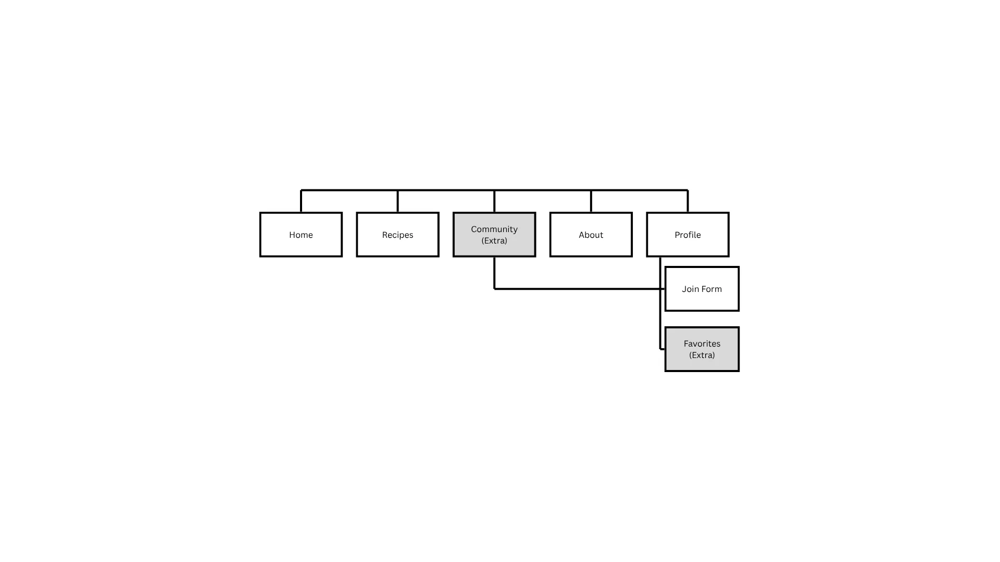
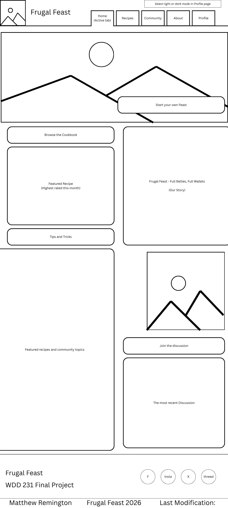
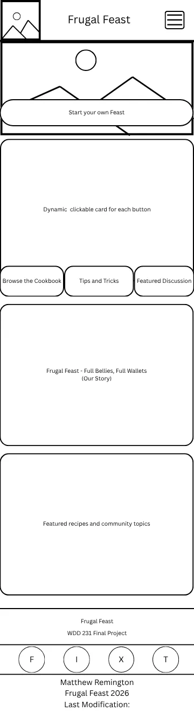

Frugal Feast Site Plan
Site Name
Frugal Feast
Site Name Choice
I chose the name "Frugal Feast" because:
- It is an alliterative and memorable name.
- It clearly communicates the purpose of the site, which is to provide budget-friendly meal ideas.
- The ironic antitheses of frugality and abundance create a compelling contrast.
Site Description -- From the Author:
This site is designed to help people on a budget find affordable and delicious meal ideas.
I realize that this is an idea that has been done many times before but I recently heard from a successful business leader that while original ideas are great there's no harm in trying to do something better than the other guy. As long as you do it correctly of course.
Although this is a student project and it uses publicly available APIs, public availability does not necessarily mean that all content is free of copyright restrictions. If you have any concerns, please contact me at public.mjr@protonmail.com.
Thank you,
Matthew Remington
Site Purpose
The purpose of this site is to provide a resource for people looking to eat well on a budget. It aims to bring people together through a shared love of cooking and food, while also helping them save money.
Target Market
The site is primarily for people on a budget who want to eat well without spending a lot of money. Families, college students, and anyone looking to save money on meals will find this site useful. The site will also appeal to those who enjoy cooking and trying new recipes.
Site Goals
- Provide a collection of affordable and delicious meal ideas.
- Help people on a budget eat well without spending a lot of money.
- Encourage people to try new recipes and cooking techniques.
- Create a community of people who share their own budget-friendly meal ideas.
User Personas
- Parent - A parent looking to provide nutritious and affordable meals for their family.
- College Student - A student on a tight budget who wants to eat well without spending a lot of money.
- Single Individual - Someone living alone who wants to save money on meals while still enjoying good food.
- Cooking Enthusiast - A person who enjoys cooking and trying new recipes, but wants to do so on a budget.
Scenarios
- Parent - "What meals can feed my whole family without costing a fortune?" A parent uses the site to find meals that can feed a lot of people with less effort and cost.
- College Student - "What can I make quickly that I can prep ahead for the week?" A student uses the site to find budget-friendly meal ideas that are easy to prepare and can be prepped in advance.
- Single Individual - "Where can I find people to share meals and ideas with?" Someone living alone uses the site to find community and belonging through shared meal experiences.
- Cooking Enthusiast - "Where can I share my own budget-friendly recipes and techniques?" A person who enjoys cooking has a space to share their own budget-friendly recipes and techniques.
SEO Plan
- Keywords: Budget, affordable, healthy, recipes, meal ideas, cooking, food
- Headings: Use H1 for the main title, H2 for section titles, and H3 for subsection titles.
- Sitemap: provide a comprehensive sitemap of the website for search engines.
- Backlinks: Build a network of high-quality backlinks from reputable sources.
- Fresh Content: Regularly update the website with new and relevant content.
Design Brief
The overall design should be modern with clean lines and a focus on usability. It should feel like a clean kitchen with everything that you need.
Colors
Primary Color: Green, representing freshness and wealth. Used for headings, links, buttons, the selected navigation item, and the lines under the header and above the footer.
Secondary Color: Mustard, representing warmth and comfort. Used for the underline beneath section headings and the bottom edge of navigation items on hover.
Tertiary Color: Tomato red, representing appetite and energy. Used for link hovers and the top edge of cards.
Background Color: Kitchen white, representing cleanliness and simplicity. Used for the page background.
Header and Footer: Off-white, providing a clean and simple look.
Text Color: Black, used for paragraphs, lists, and navigation text.
- Primary #2E9E5B
- Secondary #E1AD01
- Tertiary #C93B26
- Background #FBFAF6
- Header/Footer #F7F5EF
- Text #000000
Type and Style
Heading Font: Fredoka, sans-serif. Used for the site title, headings, and buttons for a rounded, friendly feel.
Recipe Font: Lora, serif. Used only inside recipe cards, for recipe titles, ingredients, and instructions, like a classic cookbook page.
Body Font: Nunito, sans-serif. Used for paragraphs, lists, navigation, and links because it is soft but very readable.
Navigation and Buttons: Slow transitions, smooth hover effects. Buttons that feel like kitchen appliances.
Cards: White with a subtle shadow and a tomato top edge to look like recipes on a counter.
Style Samples
Body text and links use Nunito. This is a sample link.
Sample Recipe Card
Hover over this card to see the lift and shadow. This text uses Lora, the recipe font.
Page Features
Home
- Featured Recipes
- Hot community topics
- Tips and tricks
Recipes
- Search and filter options
- Recipe details and instructions
- User can save recipes to their favorites
- User reviews and ratings
- (planned feature: Printable versions of recipes)
Community
- Discussion forums
- User profiles and activity
About
- Our story
- Company information
- Contact information
Profile
- User information
- Favorite recipes
Site Map

Wireframes
Desktop

Mobile
